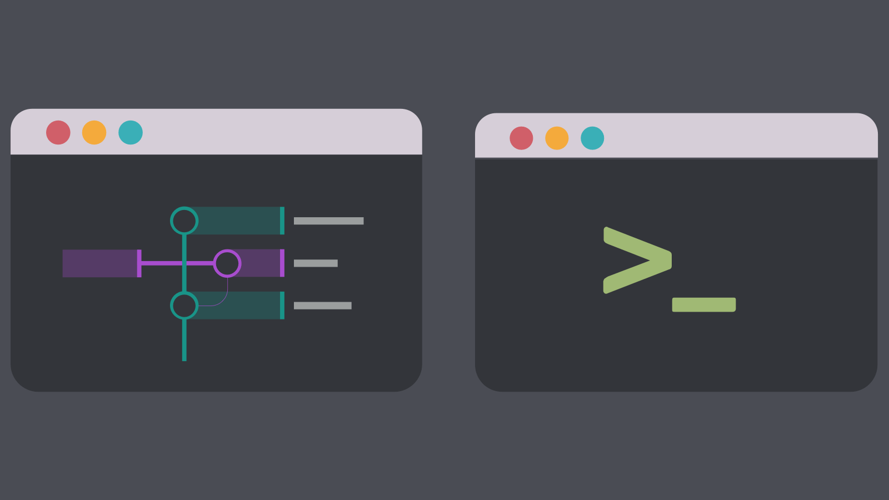
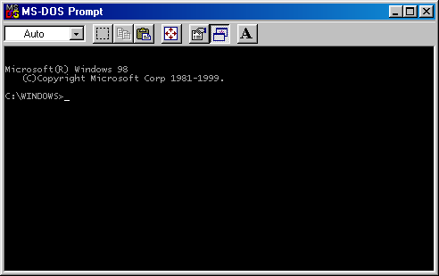
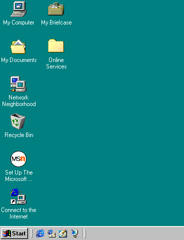

Interfaz de línea de comandos
Es un tipo de interfaz que se basa en texto y requiere que los usuarios ingresen comandos específicos utilizando el teclado. Los comandos son instrucciones escritas que indican al sistema qué acción realizar.
Interfaz gráfica de usuario
Es un entorno de interacción con una computadora que utiliza elementos visuales como ventanas, iconos, botones y menús para permitir a los usuarios realizar acciones. Los usuarios interactúan con la GUI haciendo clic o tocando elementos en la pantalla.
Existen numerosas diferencias notables entre la interfaz de línea de comandos (CLI) y la interfaz gráfica de usuario (GUI), ambas con sus ventajas y desventajas. Entre las variadas distinciones que se pueden destacar, algunas de las más significativas son las siguientes:
Representación Visual vs. Textual: La GUI se caracteriza por su representación visual de las acciones y opciones disponibles, utilizando elementos como ventanas, botones y menús. En contraste, la CLI opera principalmente con texto y comandos que deben ser escritos y ejecutados manualmente.
Facilidad de Uso: La GUI tiende a ser más intuitiva y accesible para usuarios no técnicos. Los elementos visuales facilitan la navegación y las acciones suelen ser ejecutadas mediante clics o toques en la pantalla. Por otro lado, la CLI puede tener una curva de aprendizaje más pronunciada, ya que los usuarios deben familiarizarse con la sintaxis y los comandos específicos.
Eficiencia y Control: La CLI brinda un mayor nivel de control y eficiencia para usuarios experimentados. Permite la automatización de tareas a través de secuencias de comandos, lo que es especialmente valioso en entornos de administración de sistemas o desarrollo de software. En contraste, la GUI puede ser más lenta para ciertas tareas avanzadas.
Recursos de Hardware y Consumo: Las GUI suelen requerir más recursos de hardware, como memoria y capacidad de procesamiento, en comparación con las CLI. Esto significa que las CLI pueden funcionar de manera más eficiente en sistemas con recursos limitados.
Aplicaciones y Contexto de Uso: Las GUI son comunes en aplicaciones de uso general, como navegadores web, programas de procesamiento de texto y aplicaciones de entretenimiento. Por otro lado, las CLI son fundamentales en tareas específicas como administración de servidores, programación y análisis de datos.
Curva de Aprendizaje: Aunque las GUI son más amigables para principiantes, la CLI puede ofrecer un mayor potencial una vez que se domina. Sin embargo, puede requerir tiempo y esfuerzo para aprender los comandos y la sintaxis adecuada.
En Windows 98, la Interfaz de Línea de Comandos (CLI) y la Interfaz Gráfica de Usuario (GUI) representaban dos formas distintas de interactuar con el sistema operativo.
La CLI, que estaba basada en el sistema operativo MS-DOS subyacente, permitía a los usuarios avanzados ejecutar comandos de texto para llevar a cabo diversas tareas. Era una opción preferida para aquellos que necesitaban realizar tareas de administración del sistema, realizar diagnósticos o automatizar acciones específicas. La CLI ofrecía un alto grado de flexibilidad y control, pero requería que los usuarios conocieran los comandos y su sintaxis.
Por otro lado, la GUI de Windows 98 presentaba un entorno visual y gráfico con ventanas, iconos y menús. Esta interfaz era más accesible para usuarios no técnicos, ya que permitía interactuar con el sistema mediante clics del ratón en lugar de comandos de texto. Los usuarios podían abrir programas, explorar archivos y personalizar su experiencia de manera intuitiva a través de la GUI. Windows 98 también incluía una barra de tareas que facilitaba la gestión de aplicaciones abiertas y la multitarea.
